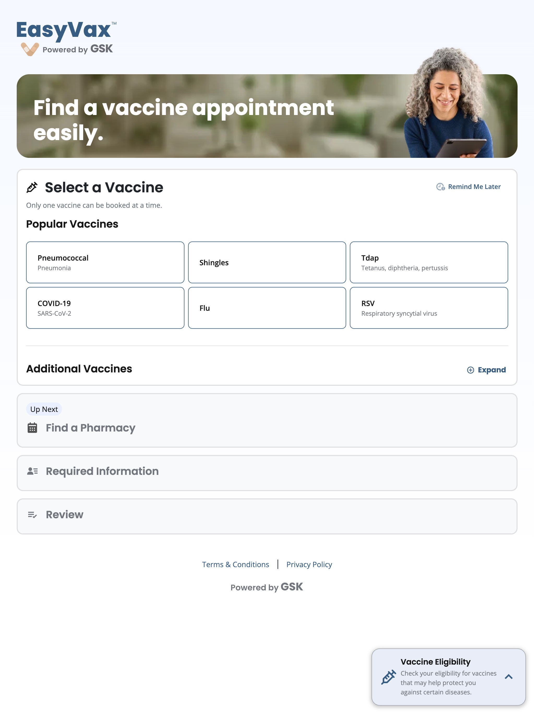

Simplifying vaccine scheduling with progressive disclosure.
Redesigning a multi-step scheduling flow so users could focus on one decision at a time — reducing drop-off and support burden across web, iOS, iPad, and Android.
The original scheduling flow presented all steps at once, overwhelming users before they'd made a single decision. Drop-off was high, and confusion was driving avoidable support requests.
Contributed to discovery and early design on v1, then took sole ownership of the redesign — rethinking the flow structure, interaction model, and cross-platform experience.
Improved scheduling completion rates and a measurable reduction in user confusion and support contacts following the redesigned flow launch.


Background
EasyVax Scheduler is a vaccine appointment tool available across web, iOS, iPad, and Android. It helps users find and book vaccine appointments at local pharmacies — walking them through vaccine selection, pharmacy search, personal details, and review.
I was part of the team from the beginning. My early contribution was user research — conducting initial interviews that shaped the product's direction and collaborating with the lead designer on the v1 experience. As the product matured, I took on full ownership of the redesign.
The problem was clear from user data and feedback: the original flow presented the entire scheduling process up front. Users saw all four steps at once before they'd made a single choice. For someone who just wanted a flu shot, it looked like a form to fill out, not an appointment to book.
How I approached it
The redesign started with a simple question: what does the user actually need to decide right now?
Understand where users dropped off
Reviewed funnel data and support contacts to pinpoint where users were abandoning the flow and what questions were generating confusion.
Restructure the flow
Shifted from a "show everything" model to a sequenced accordion — one active step at a time, with upcoming steps visible but locked until they're relevant.
Cross-platform consistency
Designed the interaction model to feel native on each platform — web, iOS, iPadOS, and Android — while keeping the core flow and mental model consistent across all four.
Test and iterate
Usability tested with real users across device types. Validated that the progressive structure reduced perceived complexity without hiding information people needed.
Decisions that mattered
Show upcoming steps, but keep them locked
Rather than hiding future steps entirely, the redesign keeps them visible as collapsed, inactive panels. Users can see where they're going without being asked to act on everything at once. This preserves a sense of progress while eliminating premature decision-making.
Lead with vaccine selection, not user information
The original flow opened with required personal fields, which felt clinical and high-stakes. Moving vaccine selection to step one — a low-friction grid choice — gave users an easy win before asking for anything personal.
One layout pattern, four platforms
Rather than designing four separate flows, I established a single interaction model and adapted the presentation layer for each platform. The accordion metaphor translates naturally to mobile without requiring a completely different mental model.
What changed
The redesign had measurable impact on two fronts. Full metrics are available in the detailed case study.
Scheduling completion rates improved after launch. Users who started the flow were more likely to finish it compared to the prior version.
A reduction in support contacts related to the scheduling flow, indicating users were able to complete the process without needing help.
A single, coherent flow that works across web, iOS, iPadOS, and Android — with platform-appropriate presentation on each.
Progressive disclosure turned a form that felt overwhelming into a flow that felt manageable — without removing any required information.
What I'd carry forward
The early research work on v1 paid dividends on the redesign. Having done the initial interviews, I understood what users actually cared about — not just what the data showed.
Progressive disclosure isn't about hiding information. It's about earning the right to ask for it. The redesign worked because it respected the user's time and attention at each step.
Designing for four platforms simultaneously forces disciplined thinking about what's truly core to an interaction. The constraints were clarifying, not limiting.
Want to see the actual designs?
The complete case study, including before/after flows, interaction design decisions, and platform-specific considerations, is available as a password-protected PDF. Drop your details and I'll send it over.